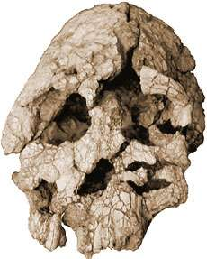
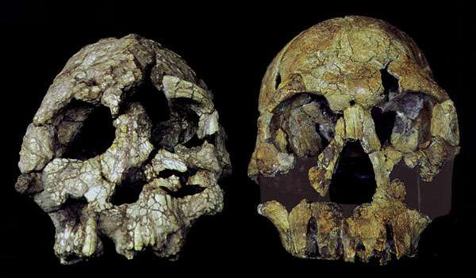

KNM-WT 40000, Kenyanthropus platyops

Descubierto por Justus Erus, miembro de un equipo dirigido por Meave Leakey, en 1999 en Lomekwi, Kenia (Leakey et al. 2001, Lieberman 2001). La edad estimada está entre 3,5 y 3,2 millones de años. Este es un cráneo mayormente completo que se encontró en dos piezas: un casco craneal que estaba fuertemente distorsionado y una cara que estaba mucho mejor conservada. El fósil tiene una combinación inusual de características, destacando principalmente una cara ancha y plana y dientes pequeños. El nombre Kenyanthropus platyops significa "Hombre de cara plana de Kenia".
El tamaño del cerebro es similar al de los australopitecinos.
Este fósil tiene considerables similitudes con el fósil habiline ER 1470 y es posible que esté relacionado con él.
Tim White (2003) ha afirmado que este fósil está tan severamente distorsionado que no puede ser identificado de manera fiable, y que podría tratarse simplemente de una versión keniana de Australopithecus afarensis.
Esta foto de WT 40000 y ER 1470 es de Lieberman 2001:

Referencias
Leakey M.G., Spoor F., Brown F., Gathogo P.N., Kiarie C., Leakey L.N. et al. (2001): Nuevo género de homínidos del este de África muestra líneas diversas del Plioceno medio. Nature, 410:433-40.
Lieberman D.E. (2001): Otra cara en nuestro árbol genealógico. Nature, 410:419-20.
White T.D. (2003): Hominidos tempranos - diversidad o distorsión? Science, 299:1994-7.
Enlaces
El hombre de rostro plano de Kenia, de Nature
No otro (bostezo) 'hombre-hormiga', por Carl Wieland (una respuesta creacionista)
Nuevo cráneo de homínido de Kenia, por Marvin Lubenow (una respuesta creacionista)
Esta página es parte del FAQ sobre Fósiles de Hominidos en el Archivo talk.origins.
Página de inicio |
Especies |
Fósiles |
Creacionismo |
Lectura |
Referencias
Ilustraciones |
Novedades |
Comentarios |
Búsqueda |
Enlaces |
Ficción
http://www.talkorigins.org/faqs/homs/wt40000.html, 07/14/2003
Copyright © Jim Foley
|| Envíame un correo electrónico